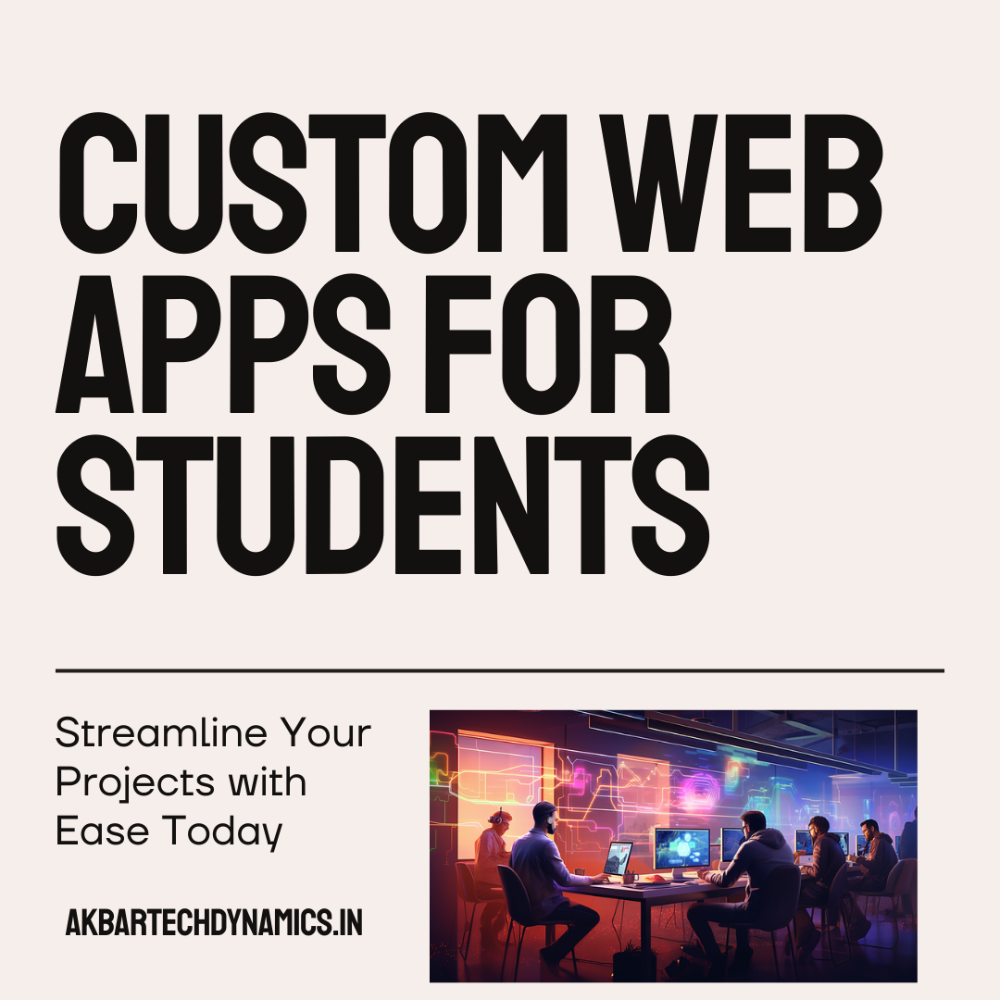

Streamline Your Projects with Our Custom Web Applications.
Introduction
In the dynamic world of academia, managing multiple projects efficiently is often a challenging task. From organizing research to collaborating with peers and ensuring deadlines are met, the demands can be overwhelming. That’s where custom web applications come into play. Streamline your projects with our custom web applications. Our tailored solutions are designed to help you manage your academic tasks with ease, improving both your efficiency and performance.
Why Custom Web Applications Are Essential for Student Projects
The Complexity of Academic Projects
Academic projects often involve various components—research, writing, collaboration, data analysis, and presentation. Managing these tasks efficiently requires the right tools. Traditional methods like spreadsheets and manual note-taking can quickly become cumbersome, leading to disorganization, missed deadlines, and reduced productivity.
The Need for Streamlined Solutions
Custom web applications offer a streamlined approach to managing academic projects. They integrate various functions—such as data management, collaboration tools, and task scheduling—into a single, easy-to-use platform. This not only simplifies your workflow but also enhances your ability to produce high-quality work on time.
How Our Custom Web Applications Streamline Your Projects
Step 1: Personalized Project Management
Our custom web applications are designed to cater to your specific needs, providing personalized project management tools that keep you organized and on track.
Task Management: Create and manage task lists tailored to your project’s requirements. Assign deadlines, set priorities, and track progress with ease.
Calendar Integration: Sync your project tasks with your calendar to ensure you never miss a deadline. Automated reminders help you stay on schedule.
Milestone Tracking: Set and monitor key milestones throughout your project, ensuring that you achieve your goals in a timely manner.
Step 2: Efficient Collaboration Tools
Collaboration is key to the success of many academic projects, especially those involving group work. Our web applications offer efficient collaboration tools that make working with others seamless.
Real-Time Communication: Engage in real-time discussions with your team through integrated chat and video conferencing features.
Document Sharing and Editing: Share documents instantly with your peers, and collaborate on them in real-time, ensuring everyone is on the same page.
Version Control: Keep track of document revisions and changes, ensuring that your team is always working with the most up-to-date information.
Step 3: Advanced Data Management
Managing research data can be one of the most challenging aspects of any academic project. Our custom web applications simplify data management, making it easier to collect, organize, and analyze information.
Automated Data Entry: Reduce the time spent on manual data entry with automated tools that pull information directly from your sources.
Centralized Database: Store all your research data in a centralized, easily accessible database. This ensures that you can retrieve the information you need quickly and efficiently.
Data Analysis Tools: Utilize built-in analysis tools to interpret your data and generate insights that enhance the quality of your project.
Step 4: Seamless Integration and Accessibility
Our web applications are designed to integrate seamlessly with the tools you already use, enhancing accessibility and ease of use.
Cross-Platform Compatibility: Access your projects from any device—whether it’s a laptop, tablet, or smartphone. Our applications are designed to work across multiple platforms, ensuring that you can manage your work from anywhere.
Integration with Existing Tools: Our web applications integrate with popular software like Microsoft Office, Google Workspace, and more, allowing you to streamline your workflow without needing to switch between different tools.
Step 5: Professional Presentation Tools
Presenting your work professionally is crucial to academic success. Our web applications offer a range of presentation tools that help you showcase your project in the best possible light.
Customizable Templates: Create visually appealing presentations with customizable templates that align with your academic requirements.
Automated Formatting: Ensure that your documents and presentations meet academic standards with automated formatting tools that handle citations, references, and layout.
Final Review and Feedback: Before submitting your project, use our review tools to check for errors, receive feedback, and make any necessary revisions.
The Benefits of Using Our Custom Web Applications
Enhanced Productivity
By automating routine tasks and simplifying complex processes, our web applications significantly enhance your productivity. This allows you to focus more on the creative and analytical aspects of your work, leading to better outcomes.
Improved Collaboration
With tools that facilitate real-time communication, document sharing, and collaborative editing, our web applications make it easier to work with peers. This leads to more effective teamwork and higher-quality projects.
Better Time Management
Custom web applications help you manage your time more effectively by keeping all your tasks, deadlines, and milestones in one place. With integrated calendars and automated reminders, you can ensure that nothing falls through the cracks.
Higher-Quality Output
From data management to presentation, our web applications are designed to help you produce high-quality work. With advanced tools and professional templates at your disposal, you can create projects that stand out.
Success Stories: How Our Custom Web Applications Have Helped Students
Sophia L., Undergraduate Student
"I used to struggle with keeping my group projects organized, especially when it came to managing deadlines and collaborating with my peers. Since I started using this web application, everything has become so much easier. We can communicate in real-time, share documents, and track our progress—all in one place. It’s been a game-changer for me and my team."
David R., Graduate Researcher
"Managing data for my thesis was overwhelming until I discovered these custom web applications. The centralized database and data analysis tools saved me so much time. I could focus on interpreting the results instead of getting bogged down with data entry and organization. I finished my research ahead of schedule and with more confidence in my findings."
Getting Started with Our Custom Web Applications
Step 1: Schedule a Consultation
To begin streamlining your projects, schedule a consultation with our team. We’ll discuss your specific needs and demonstrate how our custom web applications can help you manage your academic tasks more efficiently.
Step 2: Tailor Your Application
Based on your consultation, we’ll tailor the web application to meet your unique project requirements. Whether you need advanced data management, enhanced collaboration tools, or professional presentation features, we’ll customize the solution to fit your needs.
Step 3: Start Streamlining Your Projects
Once your custom web application is ready, you can start using it to streamline your academic projects. With our ongoing support and training, you’ll quickly see the benefits of a more organized, efficient workflow.
Conclusion
Streamlining your projects has never been easier with our custom web applications. Designed to enhance efficiency, improve collaboration, and ensure the quality of your work, these applications are an invaluable tool for any student or researcher. Whether you’re managing a complex thesis, collaborating on a group project, or simply looking to organize your tasks more effectively, our tailored solutions can help you achieve your academic goals. Get started today by scheduling a consultation and discovering how we can help you streamline your projects with ease.